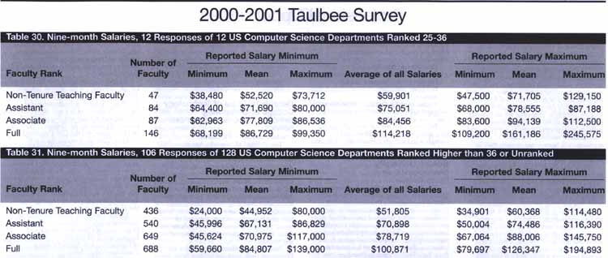
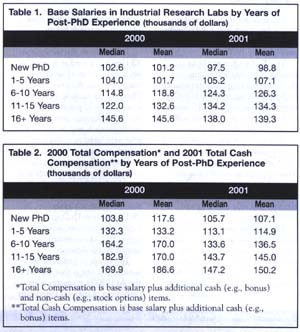

A computer science graduate school survival guide, intended for prospective or novice graduate students. This guide describes what I wish I had known at the start of graduate school but had to learn the hard way instead. It focuses on mental toughness and the skills a graduate student needs. The guide also discusses finding a job after completing the Ph.D. and points to many other related web pages.
"So long, and thanks for the Ph.D.!"
a.k.a.
"Everything I wanted to know about C.S. graduate school
at the beginning but didn't learn until later."
The 4th guide in the Hitchhiker's guide trilogy
(and if that doesn't make sense, you obviously have not read Douglas
Adams)
by Ronald T. Azuma
v. 1.08
Original version 1997, last revised January 2003
Introduction
In February 1995, on a beautiful sunny day with clear Carolina blue skies, I turned in the final, signed copy of my dissertation. The graduate school staff member did some last-minute checks on the document and pronounced it acceptable. After six and a half years of toil and sweat, I was finally done! While walking back to the C.S. department building, I was sorely disappointed that the heavens didn't part, with trumpet-playing angels descending to announce this monumental occasion. Upon hearing this observation, Dr. Fred Brooks (one of my committee members) commented, "And the sad fact is, you're no smarter today than you were yesterday." "That's true," I replied, "but the important thing is that I am smarter than I was six and a half years ago."
That day was over two years ago, and since then I have had plenty of time to reflect upon my graduate student career. One thought that has repeatedly struck me is how much easier graduate school might have been if somehow, magically, some of the things I knew when I turned in my dissertation I could have known when I first entered graduate school. Instead, I had to learn those the hard way. Of course, for many topics this is impossible: the point of graduate school is to learn those by going through the experience. However, I believe other lessons can be taught ahead of time. Unfortunately, such guidance is rarely offered. While I had to learn everything the hard way, new graduate students might benefit from my experiences and what I learned. That is the purpose of this guide.
Very little of this guide discusses technical matters. Technical skills,
intelligence and creativity are certainly strong factors for success in
graduate school. For example, I doubt there is a C.S. graduate student
who didn't at one point wish he or she had a stronger mathematical background.
However, it's beyond the scope of this guide to tell you how to be technically
brilliant, as the following joke implies:
This guide covers the character traits and social skills that often separate the "star" graduate students from the ordinary ones. Who are the students who are self-motivated, take initiative, find ways around obstacles, communicate well both orally and in writing, and get along well enough with their committee and other department members to marshal resources to their cause? Which students seem to know "how the system works" and manage to get things done? These traits are hardly unique to succeeding in graduate school; they are the same ones vital to success in academic or industrial careers, which is probably why many of the best graduate students that I knew were ones who had spent some time working before they came back to school.
This document is aimed at junior C.S. graduate students, but these observations are probably broad enough to apply to graduate education in other technical fields. My conclusions are certainly colored by my particular experiences (doing my dissertation work in interactive computer graphics in the Computer Science department of the University of North Carolina at Chapel Hill) but I think they are fairly general in application and should be of interest to readers at other schools and other C.S. specialties. Obviously, these are only my opinions and may not represent the views of other sane individuals or organizations. Some points may be controversial, but if they weren't this would not be interesting reading. Parts of this document come from two informal talks I gave at UNC about "the Ph.D. job hunt" and "observations from spending one year in industrial research." Both talks had larger audiences than any informal technical talk I gave at UNC, which told me that students are definitely interested in these subjects!
Why get a Ph.D.?
The most basic question every Ph.D. student must know the answer to is: "Why the hell am I doing this?"
It's a good question. The hours are long. The pay is low, with minimal benefits. After graduation, Ph.D. salaries are higher than B.S. and M.S. salaries, but the difference doesn't make up for the income lost by staying in school longer. The M.S. has a better "bucks for the time invested" ratio than the Ph.D. does. And in terms of social status, a graduate student doesn't rank very high on the ladder.
If you do not have an acceptable answer to this question, then don't get a Ph.D. I repeat: if you do not have a rock-solid reason for getting the Ph.D., then it is better that you leave with a Master's.
Why? Completing a Ph.D. is a long, hard road with many potholes and washed out bridges along the way. You may run over some land mines and have to stop and turn around and explore other routes. If the goal is important enough to you, then these obstacles will not prevent you from completing your journey. But if you don't know why you are on this road, then you will get discouraged and will probably leave without finishing, having wasted years of your life.
I faced this situation after the first time I took the Doctoral Written Exam (which at the time was the entrance examination into the Ph.D. program). I missed passing it by just 4 percentage points. I then had to decide whether or not to try again next semester (committing myself again to spending weeks getting ready for the test) or just leave with an M.S. degree.
I didn't come to graduate school with the Ph.D. as the primary goal. So this test result forced me to answer the basic question "Why the hell am I doing this?" After much soul searching, I found my answer and decided to take the test again, passed it, and went on to get my Ph.D.
I got the Ph.D. because I wanted to get a research position after leaving graduate school. I wanted to work with the state of the art and extend it. I did not want to "bring yesterday's technology one step closer to tomorrow." I wanted a job that would I find interesting, challenging and stimulating. While an M.S. would give me a chance at landing a research position, the Ph.D. would give me a much better chance. And I did not want to live with regrets. If I took the Doctoral Written Exam again and failed again, then I could say that it wasn't meant to be and move on with my life. I would have no regrets because I had given it my best shot and was not able to make it. However, if I left with an M.S. without taking the test a second time, and five years later I was in a job that was boring and uninteresting, then I would have to lie awake every night for the rest of my life wondering "What if?" What if I had taken the test again and passed? Would I then be in the job that I really wanted? That was not a situation I wanted to be in. I did not want to live the rest of my life regretting what might have been.
In hindsight, I think one of the main reasons I successfully completed the Ph.D. was the fact that I didn't pass the exam on the first try. It's ironic, but life sometimes works in strange ways. That initial failure caused me to answer the basic question, providing the mental fortitude to keep going despite the hurdles and problems I would later face.
My answer is you should get a Ph.D. if it is required for your goals after graduate school, such as becoming a professor or a researcher in academia, government or industry. Your answer may differ from mine. As long as you have an answer that you believe in passionately, then that's enough. If you don't have an answer, then save yourself a lot of grief and don't get the Ph.D.
Academia is a business, and "graduate student" is a job title. This is especially true at private universities. Academia is very peculiar type of business. It is certainly not the Real World and does not work in the same way that the ordinary corporate world does. However, it is a business nonetheless and as a graduate student, you must treat it that way. Graduate school made a lot more sense and became much easier for me after I realized this. If you think of graduate school as an "Ivory Tower" free of politics, money problems, and real-world concerns, you are going to be severely disappointed. If you don't believe me, read The Idea Factory by Pepper White (listed in the references) for one account of graduate life at MIT.
A few graduate students are independently wealthy or have fellowship and scholarship money that cover all their expenses for their total stay in graduate school. Such students are rare, however. Most of us needed financial support, in the form of Teaching Assistantships or Research Assistantships (RA's). In general, RA's are more desirable to students since those can directly fund the research you need to finish.
Where does the money come from to fund RA's? Your professors have to raise funds from external organizations. These include government agencies such as the National Science Foundation (NSF), Defense Advanced Research Projects Agency (DARPA), the Office of Naval Research (ONR), and others. Private companies also fund some university research, although this tends to be less common, in smaller amounts, and in the form of equipment donations. These organizations don't just give money away as charity. They expect their money to accomplish something. Increasingly these days, this takes the form of a contract for a working demonstration that must be shown at the end. That means once the money is delivered, your professors must come through with the working demonstration. It is rare that they do this by themselves. Instead, they find some very capable, young, self-motivated people who are willing to work long hours for small amounts of pay. In other words, they fund RA's.
The RA job is crucial to the academic business. If the RA's cannot successfully conduct the research, then the demonstration will not work in the end and the funding agencies may not be happy. They may choose not to fund your professor in the future, which will bring his or her research program to a halt. And there are many professors and other researchers chasing too few research dollars these days; it is a competitive market. Thus, each professor wants the best students available. These students are the most capable ones who can get the research done required to fulfill the funding contracts.
That means you must treat an RA like a job. You must prove to your professors that you are capable of getting the work done, being a team player, communicating your results, and most of the other characteristics needed to do well in regular jobs. That's why many of the upcoming sections in this guide sound like ones written for the regular workplace.
What do you get out of this? At the start, you may have to do tasks specifically related to the funding contracts. But eventually your professor must be flexible enough to fund your own specific research program that leads to the completion of your dissertation. Your stipend and tuition waiver should be enough to live on frugally without going into debt. You will learn the state of the art in your chosen speciality and conduct cutting-edge research on a subject that you find interesting and enjoyable. If you don't find this compensation sufficient, then you shouldn't be in graduate school in the first place.
The bottom line: realize that academia is a peculiar kind of business and the role you play in this enterprise. If you do your job well (and have good negotiation and interpersonal skills, as discussed in future sections), both your needs and your professors' needs will be met. But don't enter an RA position thinking that the computers, research equipment, staff members and other resources that you are provided with are your birthright. Don't take them for granted! Most of those exist only because your professors have been able to raise the money to provide those to you. In turn, you must fulfill your end of the deal by doing great research with those resources. If you don't do your job well, don't be surprised if your professors choose not to fund you in the future. They do not have to provide you with an RA job or let you use the computing equipment they acquired. And the student who has no funding, no tuition reimbursement and no access to required computing resources is the student who leaves the university that semester.
How do you make sure you are one of those best, highly desired RA's?
Read on!
"The IQ test was invented to predict academic performance, nothing
else. If we wanted something that would predict life success, we'd have
to invent another test completely."
- Robert Zajonc
If you go through a Ph.D. program, you will find graduate school a very different world from undergraduate school. If you just get an M.S., then graduate school may not be much different from undergrad (depending on where you get your degree), except that the courses are deeper and more advanced. But for a Ph.D. student, graduate school is a whole new ballgame. The students who do well are the ones who learn this earlier rather than later and make the necessary adjustments.
Graduate school is not primarily about taking courses. You will take classes in the beginning but in your later years you probably won't have any classes. People judge a recently graduated Ph.D. by his or her research, not by his or her class grades. And, without any offense to my professors, most of what you learn in a Ph.D. program comes outside of classes: from doing research on your own, attending conferences, and talking to your fellow students. Success in graduate school does not come from completing a set number of course units but rather from successfully completing a research program.
Graduate school is more like an apprenticeship where each student has his or her own project, and the masters may or may not be particularly helpful. It's like teaching swimming by tossing students into the deep end of the pool and seeing who makes it to the other end alive and who drowns. It's like training clock designers by locking students inside a clock factory with some working clocks and lots of clock parts and machines for building clocks. However, the instructions are at best incomplete and even the masters themselves don't know exactly how to build next year's models.
Excelling in a Ph.D. program requires different skills than doing well in undergrad. Undergraduate education tests you through class projects (that do not last more than a semester), essays, midterms and finals. For the most part, you work alone. Your professor may not know your name. Every other student in your class takes the same tests or does similar projects. But in a Ph.D. program, you must select and complete a unique long-term research program. For most of us, this means you have to learn how to do research and all that entails: working closely with your professors, staff and fellow students, communicating results, finding your way around obstacles, dealing with politics, etc.
I'm not saying that tests and grades are completely unimportant in graduate school. One of the two biggest hurdles in completing a Ph.D. is passing the qualifying exam. (The other is finding an acceptable dissertation topic.) But because graduate school is not nearly as exam-based as undergraduate education and requires different skills, the GRE and undergraduate grades are not as good an indicator of who will excel and who will drop out as admission committees seem to think. Those tests do not measure creativity, tenacity, interpersonal skills, oral presentation skills, and many other important traits.
The next several sections discuss these traits.
The dissertation represents a focused, personal research effort where you take the lead on your own, unique project. If you expect that your adviser is going to hold your hands and tell you what to do every step of the way, you are missing the point of the dissertation. Ph.D. students must show initiative to successfully complete the dissertation. This does not mean that guidance from professors is unimportant, just that this guidance should be at a reasonably high level, not at a micromanaging level. If you never do any tasks except those that your professor specifically tells you to do, then you need to work on initiative.
At UNC, there is a famous anecdote about a former UNC graduate student named Joe Capowski. Many years ago, UNC got a force-feedback mechanical arm to use with molecular visualization and docking experiments. The problem was how to move it to UNC. This mechanical arm is a large, heavy beast, and it was in Argonne National Labs in Chicago, IL. Unfortunately, there was a trucker's strike going on at the time. Joe Capowski, on his own initiative (and without telling anyone), flew out to Argonne, rented a car, drove the mechanical arm all the way back to North Carolina, and then handed the computer science department the bill! Many years later, Joe Capowski ran for the Chapel Hill city council and won a seat. Prof. Fred Brooks gave him an endorsement. I still remember the words Dr. Brooks said: "I may not agree with his politics, but I know he'll get things done."
While the Joe Capowski anecdote is perhaps a bit extreme, it does show
that it is often better to ask forgiveness than permission, provided you
are not becoming a "loose cannon." Certain universities (e.g. MIT) are
good at fostering a "can do" attitude among their graduate students, and
therefore they become more assertive and productive. One of the hallmarks
of a senior graduate student is that he or she knows the types of tasks
that require permission and those that don't. That knowledge will come
with experience. Generally, it's the senior graduate students who have
the most freedom to take initiative on projects. This privilege has to
be earned. The more that you have proven that you can work independently
and initiate and complete appropriate tasks, the more your professors will
leave you alone to do what you want to do.
You don't need to be a genius to earn a Ph.D. (although it doesn't hurt). But nobody finishes a dissertation without being tenacious. A dissertation usually takes a few years to complete. This can be a culture shock to former undergraduates who have never worked on a project that lasted longer than one quarter or semester (at the end of which, whatever the state of the project, one declares victory and then goes home). No one can tell you in advance exactly how long the dissertation will take, so it's hard to see where the "end of the road" lies. You will encounter unexpected problems and obstacles that can add months or years to the project. It's very easy to become depressed and unmotivated about going on. If you are not tenacious about working on the dissertation, you won't finish.
Tenacity means sticking with things even when you get depressed or when things aren't going well. For example, I did not enjoy my first year of graduate school. I didn't tell anyone this until after leaving UNC. I was not on a project and was focused on taking classes, some of which I didn't do all that well in. I didn't feel a part of the Department, and really wondered whether or not I fit in. Still, I stuck with it and when summer rolled around and I got a job in the Department, I became much more involved in research and enjoyed graduate school much more. Part of earning a Ph.D. is building a "thick skin" so you are not so fragile that you will give up at the first sign on any difficulties.
One lesson I learned as a graduate student is the best way to finish
the dissertation is to do something every day that gets you closer to being
done. If all you have left is writing, then write part of the dissertation
every
day. If you still have research to do, then do part of it
every
day. Don't just do it when you are "in the mood" or feeling productive.
This level of discipline will keep you going through the good times and
the bad and will ensure that you finish.
"The Chinese call luck opportunity and they say it knocks every day
on your door. Some people hear it; some do not. It's not enough to hear
opportunity knock. You must let him in, greet him, make friends and work
together."
- Bernard Gittelson
Flexibility means taking advantage of opportunities and synergies, working around problems, and being willing to change plans as required. As a graduate student, you are on the bottom of the academic totem pole. Even undergraduates can rank higher, especially at private universities (because they actually pay tuition!) You cannot order anybody to do anything. In general, you will be in the position of reacting to big events rather than controlling them. Therefore, you must be flexible in your approach and research program.
For example, you may not have as much access to a piece of laboratory equipment as you would like, or maybe access is suddenly cut off due to events beyond your control. What do you do? Can you find a replacement? Or reduce the time needed on that equipment? Or come in at odd hours when no normal person uses that equipment? Or redefine the direction of your project so that equipment is no longer required?
Events can be good as well as bad. The difference between the highly
effective graduate student and the average one is that the former recognizes
those opportunities and takes advantage of them. I had nothing to do with
bringing Gary Bishop to UNC. But
after he arrived I realized my research would progress much faster if he
became my adviser so I made the switch and that was a big help to my graduate
student career. Opportunities for synergy and serendipity do occur, but
one has to be flexible enough to recognize them and take advantage of them.
"I can calculate the motions of the heavenly bodies, but not the
madness of people."
- Isaac Newton
Computer Science majors are not, in general, known for their interpersonal skills. Some of us got into this field because it is easier to understand machines than people. As frustrating as computers can be, they at least behave in a logical manner, while human beings often do not. However, your success in graduate school and beyond depends a great deal upon your ability to build and maintain interpersonal relationships with your adviser, your committee, your research and support staff and your fellow students. This does not mean you must become the "life of the party." I am not and never will be a gregarious, extroverted person. But I did make a serious effort to learn and practice interpersonal skills, and those were crucial to my graduate student career and my current industrial research position.
Why should this matter, you may ask? If one is technically brilliant,
shouldn't that be all that counts? The answer is no, because the situation
is different from your undergraduate days. In both graduate school and
in business, you must depend upon and work with other people to achieve
your goals To put this in perspective, I have excerpted the following from
an article called "Organizations: The Soft and Gushy Side" by Kerry J.
Patterson, published in Fall 1991 issue of The Bent:
As part of the research design, we asked to talk to low, medium, and high performers. This in itself was an interesting exercise. To determine performance rankings, we would place in front of a senior manager the names of the 10-50 people within his or her organization. Each name would be typed neatly in the middle of a three-by-five card. After asking the manager to rank the employees from top to bottom, the managers would then go through a card sort. Typically the executive would sort the names into three or four piles and then resort each pile again. Whatever the strategy, the exercise usually took only minutes. Just like that, the individual in charge of the professionals in question was able to rank, from top to bottom, as many as 50 people. It rarely took more than three minutes and a couple of head scratches and grunts. Three minutes. Although politics may appear ambiguous to those on the receiving end, those at the top were able to judge performance with crystal clarity.
This performance ranking (conducted by individuals not involved in the interviews) was then used as a dependent measure. Those of us conducting the interviews attempted to surface information (independent measures) that would predict the ranking. What about a scientist's career would lead to a top ranking? What trashed a perfectly good career? Surely scientific prowess would have an impact. And it did.
But technological prowess wasn't as predictive as another factor. We discovered that we could tell what performance group the interviewees belonged to within a minute or two by their attitudes toward people and politics. Individuals who were ranked low by their managers spoke of organizational politics as if it were poison. They were exceptionally annoyed by the people side of the business. They frequently stated they would rather be left alone to conduct their research untrammeled by human emotions. They characterized the social side of organizations as "soft and gushy." They sounded like Spock turned bitter.
Top performers, in contrast, found a way to work within the political system. They hadn't exactly embraced politics. They didn't appear like that toothy kid you knew back in college who lived to fight political battles. They didn't come off as glad-handling sales folks. These were professional scientists who were often top ranked in their field. They looked and talked liked scientists. The difference between them and those ranked at the bottom of the totem pole was clear. They had found a way to make peace with organizations, people, and politics. They climbed to the top of their field by mastering both hard things and soft and gushy people.
Engineers and scientists aren't the only ones who find the human side
of the organizations to be annoying. As we expanded our research to include
professors, accountants, and other professionals, the findings were remarkably
similar. All found political machinations to be distasteful. It's just
that some had found a way to master the social aspects -- the top performers.
For example, which group of people did I try my best to avoid offending? Was it my committee? No, because healthy disagreements and negotiations with your adviser and committee are crucial to graduating within a reasonable amount of time. Nor was it my fellow students, because I did not need help from most of them, and most of them did not need me. The critical group was the research and support staff. These include the research faculty and all the various support positions (the system administrators, network administrators, audio-visual experts, electronic services, optical and mechanical engineers, and especially the secretaries). I needed their help to get my research done, but they did not directly need me. Consequently, I made it a priority to establish and maintain good working relationships with them.
Cultivating interpersonal relationships is mostly about treating people with respect and determining their different working styles. Give credit where credit is due. Acknowledge and thank them for their help. Return favors. Respect their expertise, advice and time. Apologize if you are at fault. Realize that different people work in different ways and are motivated by different things -- the more you understand this diversity, the better you will be able to interact and motivate them to help you. For certain people, offering to buy them dinner or giving them free basketball tickets can work wonders.
A true example: at one point in my research, I needed to make significant modifications to some low-level code in the graphics computer called "Pixel Planes 5." Doing this required expertise that I did not have, but another graduate student named Marc Olano did. How should I tap into Marc's expertise and get my necessary changes done?
The wrong way is to go up to Marc, explain the problem, and get him to make the changes. Marc doesn't need the changes done; I do. Therefore, I should do most of the work. Expecting him to do the work shows disrespect of his time.
What I actually did was to explain the problem to Marc and he sketched out a possible solution. Then I ran off and worked on my own for a few days, trying to implement the solution. I got part of it working, but ended up getting stuck on another part. Only at that point did I go back to Marc and ask him for help. By doing this, I showed that I respected his time and wanted to minimize his burden, thus making him more willing to help me. Months later, when he and Jon Cohen needed my help in setting up a system to demonstrate some of their software, I was more than happy to return the favor.
Interpersonal interaction is a huge subject and goes far beyond my description
here. All I can really do in this section is (hopefully) convince you that
these skills are vital to your graduate student career and encourage you
to learn more if you need to improve these skills. I still have a lot to
learn myself. I recommend reading The 7 Habits of Highly Effective People
and Type Talk (both listed in the References section) as starting
points. The magazine article "How to be a star engineer" (listed
in the References) also touches on this subject.
Since academia is a type of business, you will have responsibilities that you must uphold. You will be asked to greet and talk with visitors, give demos, show up to meetings, get projects done on time, etc. If you are not well organized, you will have a difficult time meeting those obligations. A technically brilliant student will be greatly hampered if he or she exhibits an "absent minded" personality and develops a reputation for being disorganized.
There are many different time management and organization skills, and you can find many books on those at your local bookstore. This guide is not going to describe them. Find one that works for you and use it. I can highly recommend Stephen Covey's book, listed in the references. But whatever system you pick, just make sure it works for you. I have never found anyone else who uses my filing scheme, but it is effective for me (by minimizing the combined time of putting away and locating a piece of information). All that really matters is whether or not it works.
One metaphor I found useful is the following: Organize your tasks as if you were juggling them. Juggling several balls requires planning and skill. You must grab and toss each ball before it hits the ground. You can only toss one ball at a time, just as you can only work on one task at a time. The order in which you toss the balls is crucial, much as the order of working on tasks often determines whether or not you meet all your deadlines. Finally, once you start a task (grab a ball) you want to get enough done so you can ignore it for a while (throw it high enough in the air so it won't come down for a while). Otherwise you waste too much time in context switches between tasks. Do you see jugglers try to keep each ball at the same height above the ground, frantically touching every ball every second?
Randy Pausch
(a professor at CMU) has a set
of notes on time management. Three words in his guide summarize the
most vital step: Kill your television. He asks you to keep your priorities
straight. What is the most important thing to a Ph.D. student? It should
be finishing the dissertation, not watching every episode of Friends.
That doesn't mean dropping everything else in life, but it does mean knowing
what takes priority and allocating time accordingly.
"Present to inform, not to impress; if you inform, you will impress.
"
- Fred Brooks
I am always amazed that articles written about businesses consistently put good communication skills at or near the top of list of skills that employers want to see in people but rarely find. But you know what? It's true!
Communication skills, both written and oral, are vital for making a good impression as a Ph.D. student and as a researcher. At a minimum, you have to defend your dissertation with an oral presentation. But you should also expect to write technical papers and reports, give presentations at conferences, and give demonstrations to groups of visitors. If you can write and speak well, you will earn recognition and distinguish yourself from the other graduate students. This is especially true when giving presentations in front of important visitors or at major conferences.
Conversely, if you cannot communicate well, then your career options after graduation will be limited. Professors spend most of their time communicating: teaching, fundraising, guiding graduate students, and documenting their results (through papers, videos, viewgraphs, etc.) In industry, we need people who can communicate well so they can work in teams, learn what businesses and customers need, present their results, raise funds, and transition to leadership roles in projects and personnel management. If you are technically brilliant but are incapable of communicating, then your results will be limited to what you can accomplish alone and your career growth will be limited, both in industry and academia.
Unfortunately, not all graduate students receive training in giving presentations or writing technical documents (which are different from English essays). These are skills that can be learned! Don't worry if giving presentations and writing papers are not something that comes naturally to you. I was not very comfortable giving oral presentations when I started graduate school, so I made a concerted effort to learn how to do so, by taking classes, reading about the subject, and practicing. It's not easy, but it's well worth the investment. If you need practice, try giving informal talks at research luncheons, joining Toastmasters, and studying good speakers to see what they do.
Covering everything about this subject would fill a guide by itself
(check out the SIGGRAPH
page on preparing and giving presentations), and would probably better
done through a videotape than a written document. But here are a few basic
points:
Confidence is the key to giving a good presentation. And the way
to gain confidence is to give good presentations. When you're just starting
out, this is a Catch-22. However, once you become good enough, this turns
into a positive feedback cycle that can make giving talks a pleasure.
Writing papers and getting them published is vital for Ph.D. students who want to get jobs in research after graduation. Your ability to write well significantly improves the chances that your paper will be accepted. When I was a young graduate student and read a paper that I didn't understand, I thought "Gee, I must be dumb." Today I will read the same paper and think "Boy, this is a lousy paper. The authors did not do a good job explaining and presenting their work." If I am reviewing that paper, such a reaction is enough for me to reject the paper.
Where do you submit your papers? Your professors will help you with this choice, but in general I would suggest shooting for the best conferences or journals where you think it has a reasonable chance of being accepted. It's not much more work to write, submit and present a paper in a highly respected venue than in less respected venues. And if you don't shoot for the top you'll never know if it would have made it. The field of computer graphics is a bit unusual in that the most desirable place to publish is a conference (SIGGRAPH), rather than a journal. Be aware that journals can take years to publish submitted papers; the turn-around time is much faster in a conference.
Finally, don't forget to communicate with your professors and your teammates. Keep your committee appraised of your progress. One thing I do (which few others do) is write short (1 screenfull) status reports, which I religiously e-mailed to my professors and team members on a weekly basis. These serve as an efficient way of keeping everyone up to date on what I'm doing. They are also a good way for me to record my progress. If I need to remember what I got done during a six month period, I have plenty of old status reports that I can read. You'd be amazed how appreciative professors and managers are of this simple practice. I also throw in a different humorous quote at the end of each week's report to reward people for reading it.
When you are working in the lab and you reach a milestone or achieve
a result, let people know about it! Bring in your professors and fellow
students and show it off! That's a win-win situation. It lets others know
that you are making progress and achieving results, and you get valuable
feedback and advice.
The choice of an appropriate adviser is crucial to successfully completing the Ph.D. Your adviser must be someone who can cover your area of specialization and someone you can get along with. When I started graduate school, I thought the adviser - student relationship was supposed to be very close, both professionally and socially. In reality, the relationship is whatever the professor and the student choose to make of it. It can be close, with invited dinners at the professor's home, or it can be distant, e.g. meeting once per semester just to remind the professor that the student is still alive.
One basic question in choosing an adviser is whether to pick a junior (non-tenured) or a senior (tenured) professor. Non-tenured professors tend to travel less and are generally more available. It is difficult to get help from an adviser who is never in town. Non-tenured faculty have fewer advisees that you have to compete with to get time with the professor. They are more likely to be personally involved with your research -- writing code, spending time in the lab at midnight, etc. Non-tenured faculty must be energetic and hard working if they want to be awarded tenure, and this work habit can rub off on their students. However, tenured faculty have several advantages as well. They are usually the ones with most of the money and resources to support you. They do not have to compete with their students for publications and recognition. The advisee does not run the risk of having his or her adviser not getting tenure and leaving the university. Tenured faculty are more experienced with "how the game works" and thus may be better sources of guidance, personal contacts, jobs after graduation, etc.
I ended up with a non-tenured professor (actually, he was not even on the tenure track at the time) as my adviser, but also put several tenured professors on my committee, including some of the most senior ones in my specialty. In that way, I got the best of both worlds: the day-to-day attention from the primary adviser, combined with the resources and experience of the committee.
Professors develop reputations amongst graduate students. Some are known to graduate their Ph.D. students rapidly. Others are impossible to get hold of, so their students take forever to finish or leave without graduating. Some dictate what their advisees have to do, while others are accommodating of student interests. Ask around. What you learn may be revealing. And if circumstances change to make another professor a more appropriate match to your needs, don't be afraid to switch if that is an overall win.
When picking a committee, you want to make sure they can cover all the
areas of your thesis. You also want to make sure that it is likely that
all the committee members will be available for meetings! Including too
many professors who travel often will make it difficult to get all five
or six together in one room for a three hour oral exam or proposal meeting.
When scheduling such meetings, start by finding times when the difficult-to-reach
professors are in town, and then add in the other committee members.
"Generally speaking, people provide better maintenance for their
cars than for their own bodies."
- Scott Adams, The Dilbert Future
When I was in graduate school, my top priority was crystal clear to me: getting out with a Ph.D. Other people described me as "focused like a laser beam" on that goal. In retrospect, I may have been too focused. There is more to life than graduate work. Keeping your health and your sanity intact are both vital to achieving the primary goal of getting out.
Repetitive Strain Injury (RSI) is a major occupational hazard in our industry. Carpal Tunnel Syndrome is just one type of RSI. If you do not know how to set up your workspace for good ergonomics, learn now! The Pascarelli reference at the end of this guide is a good book on this subject. Over a dozen of my friends and coworkers have been inflicted with this problem. In severe cases, RSI can be a career-ending injury. If you can't type, it's rather difficult to write papers, computer programs, presentations, etc. Don't let this happen to you! Prevention is the way to go. Recently I have been working with weights to strengthen my shoulders and wrists as an additional preventative step.
Earning a Ph.D. is like running a marathon. You have to learn to pace yourself and take care of your body if you want to reach the finish line. Unfortunately, students often act like sprinters running a marathon. They are highly productive for a while, but then fall by the wayside because they aren't eating correctly, exercising, taking time out to recharge their batteries, etc. You maximize your long-term productivity by not ignoring those other aspects. While I was in graduate school, I took time out to travel up and down the East Coast, from Boston down to Orlando. That was an important part of keeping my stress down and recharging my batteries. I also did some running and circuit training for exercise. For shorter breaks, I shot nerf basketballs at a tiny hoop mounted in the graphics lab and kept a guitar in my office. Figure out what works for you.
It's easy to lose perspective while in graduate school. You are surrounded
by so many other smart, hard working people that it is easy to feel inferior
and lose self-esteem and confidence. But without an underlying confidence
that you do have what it takes to complete a dissertation, it's
too easy to drop out when the going gets tough instead of sticking it through.
I found it useful to keep in touch with the "real world," to remind myself
that the graduate student population is not representative of humanity
in general and to keep my perspective. You got into graduate school because
you have already shown to your professors that you have potential and skills
that are not typical among most college students, let alone most people
-- don't forget that.
Real World, The (n.): Where a computer science student goes after
graduation; used pejoratively ("Poor slob, he got his degree and had to
go out into the REAL WORLD."). Among programmers, discussing someone in
residence there is not unlike talking about a deceased person."
- the fortune program
Ideally, the job hunt begins years before you graduate. Networking is very important: while you are in the middle to late phases of your graduate studies, try to get yourself noticed by professors and industry people at other sites. One way to do this is to offer to give a talk about your work at another site. This is not that difficult to do, since most research places love to host seminars and bring in fresh ideas. Attending conferences and working elsewhere during the summer are other ways to get exposure. Make friends with graduate students and personnel at other schools. Make and carry your own business cards. Schmooze with important visitors during major site visits. For about two years, I ran the informal "Graphics Lunch" symposia at UNC. That means I was the point of contact for many speakers who visited UNC and that helped me make contacts. There is also a "star" system that exists. Certain outstanding graduate students can get labeled as "stars" by their professors and that can be an enormous help in getting an interview at CMU or other prestigious locations. It's nice if you can get on that track but one shouldn't rely upon it!
Networking is important because many jobs are found and filled that way. I got my position at HRL partially because I visited there, at my own expense, two years before I even started my job hunt. That meant that when I circulated my résumé, I was more than just a piece of paper to them. You are not going to be looking for job ads in the newspaper. Instead, you'll look for announcements in major journals, at conferences, on the Net, and through your contacts. For industrial positions, it is crucial to get past the Human Resources department and find the individual with the ability to hire and deal with that person directly.
When do you start asking for interviews? You can start when you are able to give a talk about your dissertation work. Don't be too early or too late, because you only get one chance per site. Academic positions generally have a particular "season" (much like getting admitted to school) that starts in the Fall and ends around April; industrial positions generally don't follow that. The job hunt and interviewing process can take months; factor that into your time allocation.
The job supply and demand situation can vary dramatically in a few years, and anything I say here about how strong the job market is today (Jan. 2003) will likely be out of date by the time you read it. For example, during the time I was job hunting (end of 1994 to early 1995), good positions were not easy to find. If I had a dollar for every site that told me "We don't have a permanent position, but would you take a postdoc?" I could buy a lot of lunches. However, around 1997 the graphics job market became very strong, with many individuals getting multiple offers with high salaries. 1998 was an excellent year for people looking for tenure-track graphics faculty positions. I know many friends who found good tenure-track positions that year. So when I revised the guide in 2000, I said the job market was strong with high demand. Of course, the tech industry went downhill at that point and hasn't recovered yet. Now it is much more difficult to find research positions in industry or academia. With luck, the market will be much better at the time you read this.
Before starting the job hunt, determine your goals and parameters in advance and the "angle" you will take to sell yourself. For example, my strength was in systems, so I chose to emphasize that in my cover letters. Customize your approach to each site, if time permits. What you do for your thesis determines who will and who won't take a look at you. Try to get at least one reference from outside your university.
This guide is not going to cover the basics of interviewing; you can get that from many books (e.g. the Martin Yate and Bob Weinstein books listed in the references). However, I will mention some tips. Don't interview on the day of arrival, and try to avoid Mondays and Fridays. Be prepared for hard or illegal questions, but you probably won't get them. Do your homework on each site before interviewing! It continually amazes me that people show up for interviews without knowing anything about the institution they want to join. If the target is a research lab for a major company, you can easily find Wall St. Journal articles, annual reports and stockbroker reports in your library. If your goal is an academic position, check out the Tomorrow's Professor site for guidance. If you interview at a university, get their course catalog and use their numbering scheme to describe the courses you can teach. Interview to find out more about them, not just to sell yourself. Your 45-60 minute research presentation is crucial; make sure you practice it thoroughly. Interviews create interviews. That is, if you've already gone on many interviews at other places, then that makes you appear more desirable since others want you, and that makes it easier for you to get more interviews. Broadcast this fact by keeping your interview schedule on your web page. There is an anecdote about one student who received offers to interview at many different places, but only after Stanford interviewed him! Keep logs on who you talk to, what you talked about, and when. That makes it easier to keep things straight when juggling several contenders. The major conferences in your field are a good place to schedule preliminary interviews to get your foot in the door, because it is cheap for the company or university. The people you need to meet are already there, so that saves them the expense of having to fly you out and house you at their site.
Offers are a waiting game. Be prepared for lots of frustration. You need a written offer or nothing is official; you should also accept or reject in writing. Negotiate, but be aware of the strength or weakness of your position. Starting salary may not be as important as the type of work, benefits, and growth potential. Drug tests and other factors are becoming more common; you will have to decide how you want to respond to those.
Ah yes, salaries. Everybody wants to know about those. For academic (tenure track) salaries, you can get typical numbers from the annual Taulbee surveys, printed in the Computing Research News newsletter and the Communications of the ACM. Realize that these are 9-month salaries. Whether or not you can procure funding that covers 2 or 3 months of summer salary makes a big difference to your bottom line. Also, professors can make money by consulting at rates of $1000-2500 per day, although this is more common among established professors. Figures for industrial salaries are harder to come by. The Maisel and Gaddy references are the only ones I have found that specifically surveys young Ph.D.'s in industry (also see the chart a few paragraphs down). Salaries depend heavily on geography. Silicon Valley is in a league of its own, with salaries far above any other region. But before you decide to move to Palo Alto, remember that the cost of living there is also in the stratosphere. In Sept. 1997, a $60k salary in Indianapolis bought the same standard of living as a $101k salary in San Jose! The cost of living difference is larger today. Decent houses in the Silicon Valley cost more than half a million. More general computer science salary surveys are run by the IEEE and EE Times, available at the JobStar salary survey site.
Acquire salary information on your own by making use of your network. Don't ask for someone's salary directly, unless it's someone you know very well and even then be very careful. Instead, bounce figures off people and see how they respond. Do they think the figure you mention is high, low, or about right? By seeing how people respond you can get an idea of what the market range is.
Factor in benefits and the expected workload into your compensation evaluation. That $100k offer may seem less attractive if you have to work 80 hour weeks in that position. Traditionally, stock options made up a large fraction of the compensation packages for startups and Silicon Valley positions, but with the tech bust that may no longer be the case.
The type of work and compensation varies dramatically with the types of positions. Academic positions are tenure-track, research staff (non tenured) and postdocs. Tenure-track positions at major universities are fairly hard to come by; you need to be both good and lucky. Read the Feibelman and Ralston references for more details. The tenure-track also requires a lot of hours and dedication. As Randy Pausch put it, tenure is a competitive process where you get compared with the other assistant professors and the already-tenured professors. If they worked 70 hour weeks for six years to get tenure, don't expect to get away with working 40 hour weeks. Postdocs are low paying but good for padding your C.V. if you think you need it to get a tenure track position. Just be sure to read the Feibelman reference, which tells you exactly what you need to do to survive a postdoc. In general, academic positions don't pay as well as industrial positions, but universities offer more freedom, prestige, a richer intellectual environment and the possibility of long-term stability (with tenure). There's a big difference between startups, regular industrial jobs, and industrial research positions. Startups can be the most lucrative financially, although that's a big gamble. Read the Kawasaki and Bell references if you want to work at a startup. Expect to put in long hours while losing contact with the research community. Industrial research lies in an uncomfortable middle ground between production jobs and academic research, and blends the advantages and disadvantages of industry vs. academia.
The next two charts are the latest figures I have for academic and industrial salaries.

The above chart is from the March 2002 issue of Computing Research News. It shows the results of the latest Taulbee survey of academic salaries, where nine-month assistant professor salaries average in the $70-80k range.

The above chart is from the November 2002 issue of Computing Research News, showing compensation for industrial positions (based on 11 organizations and 689 responses). Unsurprisingly, expected compensation from bonuses and stock options dropped significantly from 2000 to 2001. Industrial compensation is higher than academic, although the Taulbee figures are for nine months of salary (not 12). With summer salary and other supplements, the difference is reduced. Still, Computing Research News estimates that total compensation for assistant and associate professors lags that of comprable industrial counterparts by 25%.
No matter where you go after you graduate, maintain your contacts with
your alma mater. You may change jobs and move from place to place, but
you will always have your degree from your university. If you keep good
relations with your university and your fellow former students, that will
serve as an excellent base for your personal network.
The following story, called "The Parable of the Black Belt," is excerpted
from Built to Last: Successful Habits of Visionary Companies, by
James C. Collins and Jerry I. Porras.
"Before granting the belt, you must pass one more test," says the sensei.
"I am ready," responds the student, expecting perhaps one final round of sparring.
"You must answer the essential question: What is the true meaning of the black belt?"
"The end of my journey," says the student. "A well-deserved reward for all my hard work."
The sensei waits for more. Clearly, he is not satisfied. Finally, the sensei speaks. "You are not yet ready for the black belt. Return in one year."
A year later, the student kneels again in front of the sensei.
"What is the true meaning of the black belt?" asks the sensei.
"A symbol of distinction and the highest achievement in our art," says the student.
The sensei says nothing for many minutes, waiting. Clearly, he is not satisfied. Finally, he speaks. "You are still not ready for the black belt. Return in one year."
A year later, the student kneels once again in front of the sensei. And again the sensei asks: "What is the true meaning of the black belt?"
"The black belt represents the beginning -- the start of a never-ending journey of discipline, work, and the pursuit of an ever-higher standard," says the student.
"Yes. You are now ready to receive the black belt and begin your
work."
First, the Ph.D. is the beginning, not the culmination, of your career. Don't worry about making it your magnum opus. Get out sooner, rather than later.
Second, if you bother to talk to and learn from the people who have already gone through this process, you might graduate two years earlier.
Good luck.
Bronson, Po. The Nudist on the Late Shift. Random House, 1999.
ISBN 0375502777.
A fun read, giving the flavor of what working in the Silicon Valley
is like. Many of the chapters previously appeared as articles in
Wired.
A snapshot of the culture before the tech bubble burst.
Covey, Stephen R. The 7 Habits of Highly Effective People. Fireside
Simon and Schuster, 1989. ISBN 0-671-70863-5.
Excellent overall, with sections on time management, guiding principles
and interpersonal skills.
EE Times Salary Survey Issue.
EE Times produces an annual survey and commentary about industrial
salaries.
Feibelman, Peter J. A Ph.D. is Not Enough! A Guide to Survival in
Science. Addison-Wesley, 1993. ISBN 0-201-62663-2.
Good discussion of research career paths. A must read if you choose
to take a postdoc.
Kawasaki, Guy. The Macintosh Way: The Art of Guerrilla Management.
Harper
Perennial, 1990. ISBN 0-06-097338-2.
Despite problems that occurred at Apple, this book shows the energy
and chutzpah required to survive in a startup.
Kelley, Robert E. How to be a star engineer. IEEE Spectrum
(October 1999), 51-58.
Good description of the skills that are needed to excel at work,
which go beyond sheer technical skills.
Kroeger, Otto and Janet M. Thuesen. Type Talk: The 16 Personality
Types that Determine How We Live, Love and Work. Tilden Press, 1988.
ISBN 0-385-29828-5.
Introduction to the Myers-Briggs type indicators, useful for interpersonal
relations.
Maisel, Herbert and Catherine Gaddy. Employment and Salaries of Recent Doctorates in Computer Science. Communications of the ACM 40, 9 (September 1997), 90-93.
Maisel, Herbert and Catherine Gaddy. Employment and Salaries of Recent
Doctorates. Communications of the ACM 41, 11 (November 1998), 99-101.
One of the few surveys I have seen for recent C.S. Ph.D.s that
includes both industry and academic numbers. The low sample size is a problem,
however.
Pascarelli, Emil and Deborah Quilter. Repetitive Strain Injury: A
Complete User's Guide. John Wiley and Sons, 1994. ISBN 0-471-59532-2.
A good introduction to RSI injuries and avoiding them.
Pastore, Robert R. Stock Options: An Authoritative Guide to Incentive
and Nonqualified Stock Options, 2nd edition. (printed Dec. 1999).
ISBN 0966889924. PCM Capital Publishing.
I haven't read this but I have been told this is an excellent reference
for those of you fortunate enough to have a bundle of stock options.
Give me a few options as a tip for finding this book, ok? :-) The
book covers tax and legal issues and gives advice on when to keep or exercise
your options.
Ralston, Anthony. The Demographics of Candidates for Faculty Positions
in Computer Science. Communications of the ACM 39, 3 (March 1996),
78-84.
A must read if you are looking for tenure track positions. The
author is a former CS professor who led a faculty search, so if you don't
believe what I say, then listen to him.
Weinstein, Bob. Résumés Don't Get Jobs: The Realities
and Myths of Job Hunting. McGraw-Hill, 1993. ISBN 0-07-069144-4.
Gritty, realistic job hunting guide for today's market.
White, Pepper. The Idea Factory: Learning to Think at MIT. Plume
(Penguin Books), 1992. ISBN 0-452-26841-9.
While this is not about C.S., it does dispel the notion of graduate
school as an ivory tower environment.
Yate, Martin. Knock 'Em Dead: The Ultimate Job Seeker's Handbook.
Bob Adams, Inc.
Good generic guide to job hunting and interviews, including a long
section on interview questions.
Questions? Mail to azuma@HRL.com
Return to Ron Azuma's page of guides on CS graduate school
Return to Ron Azuma's home page
Copyright 1997-2003, Ronald T. Azuma, except for portions excerpted from elsewhere